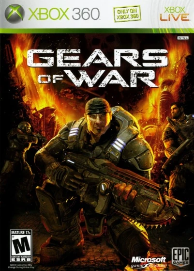

Information

Gears of War (also referred to as Gears) is a media franchise centered on a series of video games created by Epic Games, developed and managed by The Coalition, and owned and published by Xbox Game Studios. The franchise is best known for its third-person shooter video games, which has been supplemented by spin-off video game titles, a DC comic book series, eight novels, a board game adaptation and various merchandise.
The original trilogy focuses on the conflict between humanity and the subterranean reptilian humanoid known as the Locust Horde on the world of Sera. The first installment, Gears of War, was released on November 7, 2006, for the Xbox 360. The game follows protagonist Marcus Fenix, a soldier in the Coalition of Ordered Governments tasked to lead a last-ditch effort to destroy the Locust Horde and save humanity.
Two subsequent titles, Gears of War 2 (2008) and Gears of War 3 (2011), featured a three-way conflict between humanity, the Locust Horde and their mutated counterparts, the Lambent. Gears of War: Judgment, a spin-off prequel to the series' first title, was released in 2013; it focuses on Damon Baird, one of Fenix's squad-mates. Gears of War: Ultimate Edition was released for the Xbox One and Microsoft Windows between August 2015 to March 2016.
| Deaths & missing | Captured | |
|---|---|---|
| Roughly | Billions or 25% of population | Millions |